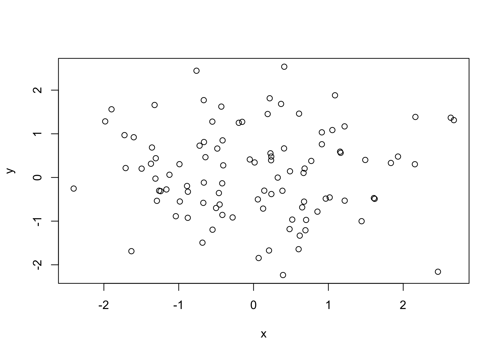
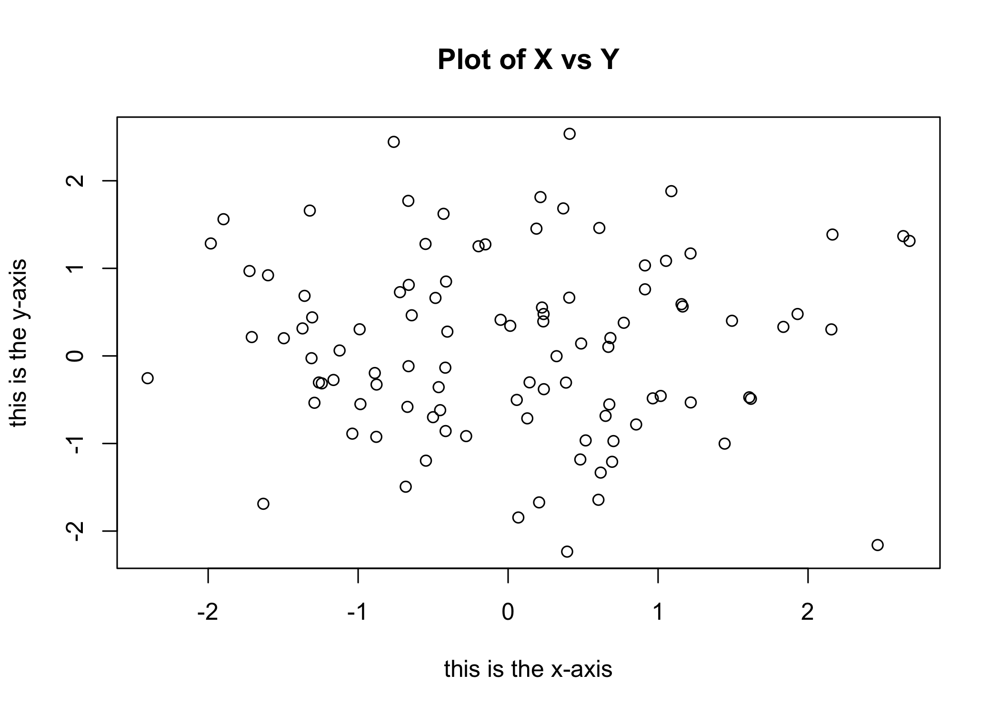
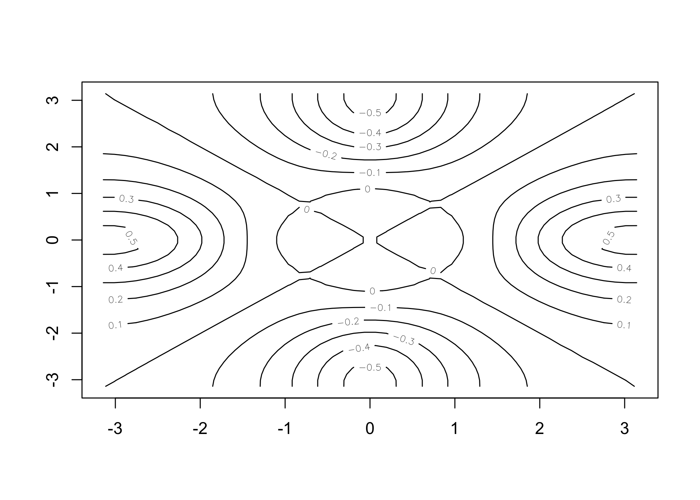
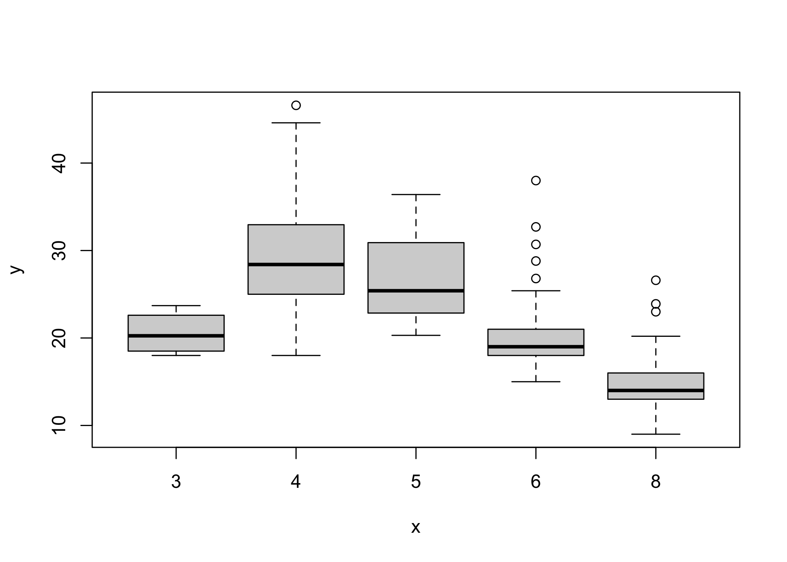
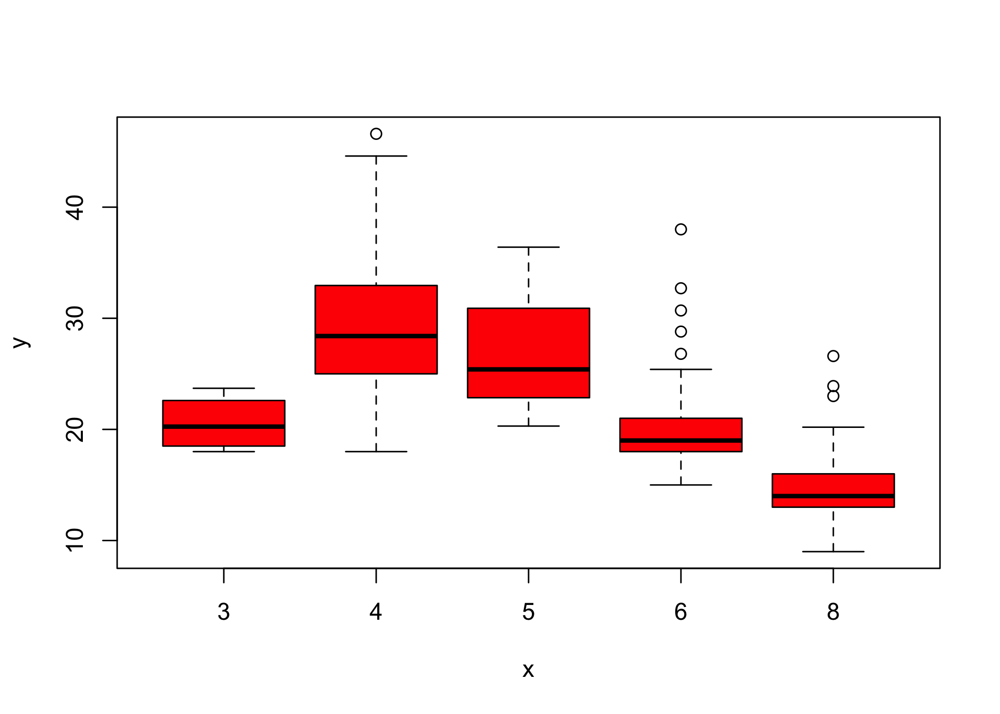
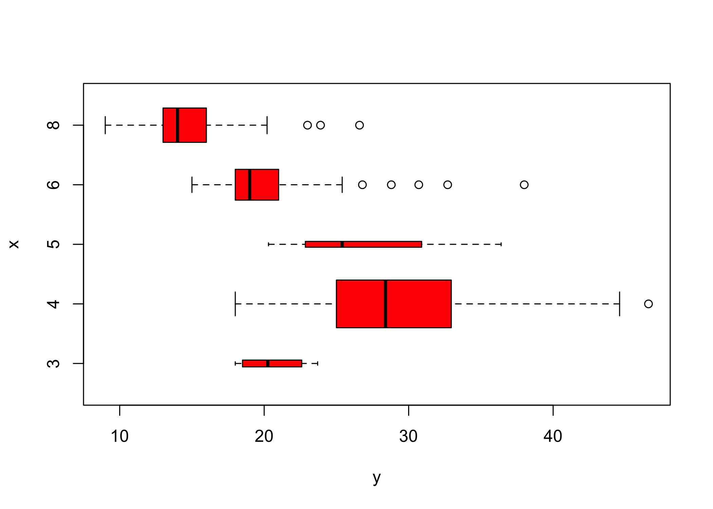
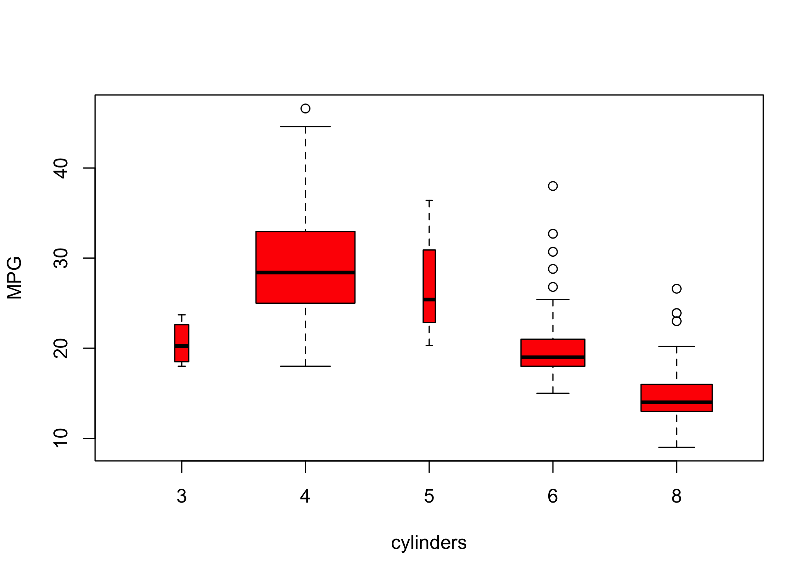

[1] 1 3 2 5Lab 1
Introduction to Statistical Learning - PISE
Introduction to R
- In this lab we learn basic R commands by running them.
- The best way to learn R is to try the commands yourself.
- Download R: http://cran.r-project.org/
- Recommended IDE: RStudio (desktop or cloud version)
- http://rstudio.com/
Basic Commands
Ruses functions to perform operations
- General syntax:
funcname(input1, input2, ...)
- Inputs are called arguments
- A function can have any number of arguments
- Example:
c()(concatenate) creates a vector
- Values inside
c()are joined into one vector
- Assign the result to an object (e.g.,
x)
- Typing
xprints the vector
>is just the R prompt (not part of the command)
- It indicates that R is ready for input
- You can also assign values using
=instead of<-
Use the up arrow to recall and edit previous commands
Type
?funcnameto open the help page for a functionR adds vectors element-wise
Vectors should have the same length
Check length using
length()
ls()lists all objects currently in memory
rm()removes objects you no longer need
- Remove all objects at once with
rm(list = ls())
matrix()creates a matrix of numbers
- Use
?matrixto read the documentation
matrix()has several arguments
- Main ones:
data,nrow,ncol
- Create a simple matrix using these three inputs
- Argument names (
data=,nrow=,ncol=) can be omitted
- Order matters if names are not specified
- Omitting argument names gives the same result (if order is correct)
- Specifying names improves clarity and avoids mistakes
- By default,
matrix()fills entries by column
- Use
byrow = TRUEto fill entries by row
- If not assigned, the matrix is printed but not saved
sqrt()applies element-wise to vectors or matrices
x^2raises each element ofxto the power 2
- Any power is allowed (including fractional or negative)
rnorm(n)generatesnrandom normal variables
- Each call produces different values
- Create two related vectors
xandy
- Use
cor()to compute their correlation
- By default,
rnorm()generates standard normal variables- Mean = 0
- Standard deviation = 1
- Mean = 0
- Modify using
meanandsdarguments
- Use
set.seed(integer)for reproducibility
- The seed ensures the same random numbers are generated
[1] -1.1439763145 1.3421293656 2.1853904757 0.5363925179 0.0631929665
[6] 0.5022344825 -0.0004167247 0.5658198405 -0.5725226890 -1.1102250073
[11] -0.0486871234 -0.6956562176 0.8289174803 0.2066528551 -0.2356745091
[16] -0.5563104914 -0.3647543571 0.8623550343 -0.6307715354 0.3136021252
[21] -0.9314953177 0.8238676185 0.5233707021 0.7069214120 0.4202043256
[26] -0.2690521547 -1.5103172999 -0.6902124766 -0.1434719524 -1.0135274099
[31] 1.5732737361 0.0127465055 0.8726470499 0.4220661905 -0.0188157917
[36] 2.6157489689 -0.6931401748 -0.2663217810 -0.7206364412 1.3677342065
[41] 0.2640073322 0.6321868074 -1.3306509858 0.0268888182 1.0406363208
[46] 1.3120237985 -0.0300020767 -0.2500257125 0.0234144857 1.6598706557Use
set.seed()to ensure reproducible results
Different R versions may produce small differences
mean()computes the sample mean
var()computes the variance
sqrt(var(x))gives the standard deviation
Alternatively, use
sd()directly
Graphics
plot()is the main function for basic graphics inR
plot(x, y)creates a scatterplot
- Additional arguments customize the plot
- Example:
xlabsets the x-axis label
- Example:
- Use
?plotto see all available options


- Save plots by opening a graphics device
- Use
pdf()to create a PDF file
- Use
jpeg()to create a JPEG file
- The function depends on the desired file format
dev.off()closes the graphics device (finish saving the plot)
Alternatively, copy the plot window and paste into another document
seq()generates sequences of numbers
seq(a, b)creates integers fromatob
seq(0, 1, length = 10)creates 10 equally spaced values
3:11is shorthand forseq(3, 11)
[1] 1 2 3 4 5 6 7 8 9 10 [1] 1 2 3 4 5 6 7 8 9 10contour()creates a contour plot (3D surface representation)
Similar to a topographical map
Required inputs:
- Vector of
xvalues
- Vector of
yvalues
- Matrix of
zvalues (for each(x, y)pair)
- Vector of
Additional arguments allow customization
Use
?contourfor documentation
y <- x
f <- outer(x, y, function(x, y) cos(y) / (1 + x^2))
contour(x, y, f)
contour(x, y, f, nlevels = 45, add = T)

image()produces a color-coded plot (heatmap)
Colors represent the
zvalues
Often used for temperature-style maps
persp()creates a 3D surface plot
thetaandphicontrol the viewing angles


Indexing Data
- Often we need to examine part of a data set
- Suppose the data are stored in a matrix
A
[,1] [,2] [,3] [,4]
[1,] 1 5 9 13
[2,] 2 6 10 14
[3,] 3 7 11 15
[4,] 4 8 12 16A[2, 3]selects the element in row 2, column 3
- First index = row
- Second index = column
- Use vectors or ranges to select multiple rows and/or columns
[,1] [,2]
[1,] 5 13
[2,] 7 15 [,1] [,2] [,3]
[1,] 5 9 13
[2,] 6 10 14
[3,] 7 11 15 [,1] [,2] [,3] [,4]
[1,] 1 5 9 13
[2,] 2 6 10 14 [,1] [,2]
[1,] 1 5
[2,] 2 6
[3,] 3 7
[4,] 4 8- Leaving one index empty selects all rows or all columns
A[1:2, ]→ all columns
A[, 1:2]→ all rows
- A single row or column is treated as a vector
- Use a negative index (
-) to exclude rows or columns
A[-1, ]removes row 1
A[, -1]removes column 1
dim()returns the dimensions of a matrix
- Output format: (number of rows, number of columns)
Loading Data
First step in analysis: import the data
Use
read.table()to load text files
Use
write.table()to export data
Check the working directory before loading files
Load the
Autodata set fromAuto.data
Data are stored as a data frame
Use
View()to inspect the data
Use
head()to display the first rows
V1 V2 V3 V4 V5 V6 V7 V8
1 mpg cylinders displacement horsepower weight acceleration year origin
2 18.0 8 307.0 130.0 3504. 12.0 70 1
3 15.0 8 350.0 165.0 3693. 11.5 70 1
4 18.0 8 318.0 150.0 3436. 11.0 70 1
5 16.0 8 304.0 150.0 3433. 12.0 70 1
6 17.0 8 302.0 140.0 3449. 10.5 70 1
V9
1 name
2 chevrolet chevelle malibu
3 buick skylark 320
4 plymouth satellite
5 amc rebel sst
6 ford torinoAuto.datais a plain text file
It can be opened with a text editor or Excel before importing
Data were loaded incorrectly because:
- R treated variable names as data
- Missing values are coded as
?
- R treated variable names as data
Use
header = TRUEto specify that the first row contains variable names
Use
na.strings = "?"to define missing values
Missing values are common in real data sets
stringsAsFactors = TRUEconverts character variables into factors
Each distinct string becomes a separate level
To import Excel data:
- Save as CSV (comma-separated values)
- Use
read.csv()in R
- Save as CSV (comma-separated values)
[1] 397 9 mpg cylinders displacement horsepower weight acceleration year origin
1 18 8 307 130 3504 12.0 70 1
2 15 8 350 165 3693 11.5 70 1
3 18 8 318 150 3436 11.0 70 1
4 16 8 304 150 3433 12.0 70 1
name
1 chevrolet chevelle malibu
2 buick skylark 320
3 plymouth satellite
4 amc rebel sstdim()returns the data dimensions- 397 observations (rows)
- 9 variables (columns)
- 397 observations (rows)
- Several methods exist to handle missing data
- Here, only 5 rows contain missing values
- Use
na.omit()to remove those rows
- After loading the data correctly
- Use
names()to view the variable names
Additional Graphical and Numerical Summaries
- Use
plot()to create scatterplots of quantitative variables
- Typing variable names alone gives an error
- R must be told which data set contains the variables
- Access variables using
dataset$variable
- Example:
Auto$mpg
- Alternatively, use
attach(Auto)to access variables directly

cylindersis stored as numeric → treated as quantitative
- Since it has few distinct values, it can be treated as qualitative
- Use
as.factor()to convert numeric to categorical
- If the x-axis variable is qualitative,
plot()produces a boxplot
- Boxplots summarize distributions by category
- Additional arguments can customize the plot




- Use
hist()to create a histogram
col = 2is equivalent tocol = "red"
pairs()creates a scatterplot matrix
- Shows scatterplots for all pairs of variables
- Can specify a subset of variables

identify()works withplot()for interactive labeling
- Arguments: x-variable, y-variable, label variable
- Click points on the plot to display labels
- Press Esc to stop
- Printed numbers correspond to row indices
summary()provides a numerical summary of each variable
- Output depends on the variable type (numeric or factor)
mpg cylinders displacement horsepower weight
Min. : 9.00 Min. :3.000 Min. : 68.0 Min. : 46.0 Min. :1613
1st Qu.:17.00 1st Qu.:4.000 1st Qu.:105.0 1st Qu.: 75.0 1st Qu.:2225
Median :22.75 Median :4.000 Median :151.0 Median : 93.5 Median :2804
Mean :23.45 Mean :5.472 Mean :194.4 Mean :104.5 Mean :2978
3rd Qu.:29.00 3rd Qu.:8.000 3rd Qu.:275.8 3rd Qu.:126.0 3rd Qu.:3615
Max. :46.60 Max. :8.000 Max. :455.0 Max. :230.0 Max. :5140
acceleration year origin name
Min. : 8.00 Min. :70.00 Min. :1.000 amc matador : 5
1st Qu.:13.78 1st Qu.:73.00 1st Qu.:1.000 ford pinto : 5
Median :15.50 Median :76.00 Median :1.000 toyota corolla : 5
Mean :15.54 Mean :75.98 Mean :1.577 amc gremlin : 4
3rd Qu.:17.02 3rd Qu.:79.00 3rd Qu.:2.000 amc hornet : 4
Max. :24.80 Max. :82.00 Max. :3.000 chevrolet chevette: 4
(Other) :365 - For qualitative variables,
summary()shows counts per category
- You can also summarize a single variable (e.g.,
summary(mpg))
- Use
q()to quit R
- Option to save the current workspace on exit
- Save command history with
savehistory()
- Reload history with
loadhistory()